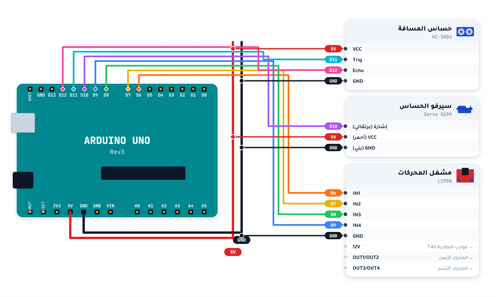
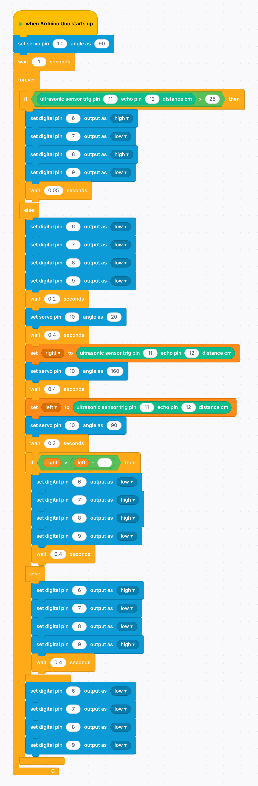

▶فيديو الشرح
السيارة تتقدم، وعند وجود عائق تلتفت بالحساس يميناً ويساراً وتختار الطريق الأوسع.
1المكونات
ARDUINO UNOboardحساس المسافةHC-SR04سيرفو الحساسServo SG90مشغل المحركاتL298Nأسلاك توصيلJumper Wiresلوحة تجاربBreadboard
2مخطط التوصيل

اضغط على المخطط لتكبيره · نسخة SVG عالية الدقة
| القطعة | الطرف | يوصل إلى |
|---|---|---|
| حساس المسافة | VCC | 5V |
| حساس المسافة | Trig | D11 |
| حساس المسافة | Echo | D12 |
| حساس المسافة | GND | GND |
| سيرفو الحساس | إشارة (برتقالي) | D10 |
| سيرفو الحساس | VCC (أحمر) | 5V |
| سيرفو الحساس | GND (بني) | GND |
| مشغل المحركات | IN1 | D6 |
| مشغل المحركات | IN2 | D7 |
| مشغل المحركات | IN3 | D8 |
| مشغل المحركات | IN4 | D9 |
| مشغل المحركات | GND | GND |
| مشغل المحركات | 12V | موجب البطارية 7.4V |
| مشغل المحركات | OUT1/OUT2 | المحرك الأيمن |
| مشغل المحركات | OUT3/OUT4 | المحرك الأيسر |
3الكود
المكتبات المطلوبة (من Arduino IDE ← Sketch ← Include Library ← Manage Libraries):
- Servo (مدمجة مع Arduino IDE)
/* المستوى المتوسط — المشروع 3: سيارة تجنب العقبات (Obstacle Avoiding Robot) كتاب: 38 مشروع في شهر — لؤي النصري (@robotlouay) التوصيل: HC-SR04: VCC → 5V Trig → Pin 11 Echo → Pin 12 GND → GND (مثبّت فوق ذراع السيرفو) Servo: إشارة → Pin 10 أحمر → 5V بني → GND L298N: IN1 → 6 IN2 → 7 IN3 → 8 IN4 → 9 (كما في سيارة تتبع الخط) */ #include <Servo.h> const int TRIG_PIN = 11, ECHO_PIN = 12, SERVO_PIN = 10; const int IN1 = 6, IN2 = 7, IN3 = 8, IN4 = 9; const int SAFE_CM = 25; Servo head; void motors(int r, int l) { digitalWrite(IN1, r == 1); digitalWrite(IN2, r == -1); digitalWrite(IN3, l == 1); digitalWrite(IN4, l == -1); } void forward() { motors(1, 1); } void backward() { motors(-1, -1); } void turnRight(){ motors(-1, 1); } void turnLeft() { motors(1, -1); } void stopCar() { motors(0, 0); } int distanceCm() { digitalWrite(TRIG_PIN, LOW); delayMicroseconds(2); digitalWrite(TRIG_PIN, HIGH); delayMicroseconds(10); digitalWrite(TRIG_PIN, LOW); long t = pulseIn(ECHO_PIN, HIGH, 30000); return t == 0 ? 400 : t * 0.034 / 2; } int lookAt(int angle) { // يدير الحساس ويقيس المسافة head.write(angle); delay(400); int d = distanceCm(); return d; } int lookRight() { return lookAt(20); } int lookLeft() { return lookAt(160); } void setup() { pinMode(TRIG_PIN, OUTPUT); pinMode(ECHO_PIN, INPUT); pinMode(IN1, OUTPUT); pinMode(IN2, OUTPUT); pinMode(IN3, OUTPUT); pinMode(IN4, OUTPUT); head.attach(SERVO_PIN); head.write(90); // الحساس للأمام delay(1000); } void loop() { if (distanceCm() > SAFE_CM) { forward(); delay(50); return; } // عائق أمامي stopCar(); delay(200); int right = lookRight(); int left = lookLeft(); head.write(90); delay(300); if (right < SAFE_CM && left < SAFE_CM) { // الطريقان مغلقان backward(); delay(500); turnRight(); delay(700); // التفاف للخلف تقريباً } else if (right >= left) { turnRight(); delay(400); } else { turnLeft(); delay(400); } stopCar(); delay(100); }
🧩 mBlock 5: اختر الجهاز Arduino Uno ثم وضع Upload، وأنشئ المتغيرات المستعملة من فئة Variables. أضف إضافة Ultrasonic Sensor من Extensions.
نسخة مبسطة من منطق تجنب العقبات.
نسخة مبسطة من منطق تجنب العقبات.


4كيف يعمل؟
- مسافة أكبر من 25 سم → للأمام
- عائق → توقف
- السيرفو يدير الحساس لقياس اليمين واليسار
- يختار الاتجاه الأكثر خلوّاً
⚠ قبل توصيل الكهرباء: راجع كل سلك مع الجدول أعلاه، وتأكد من عدم وجود تماس بين 5V و GND. اختر اللوحة والمنفذ الصحيحين من قائمة Tools في Arduino IDE.